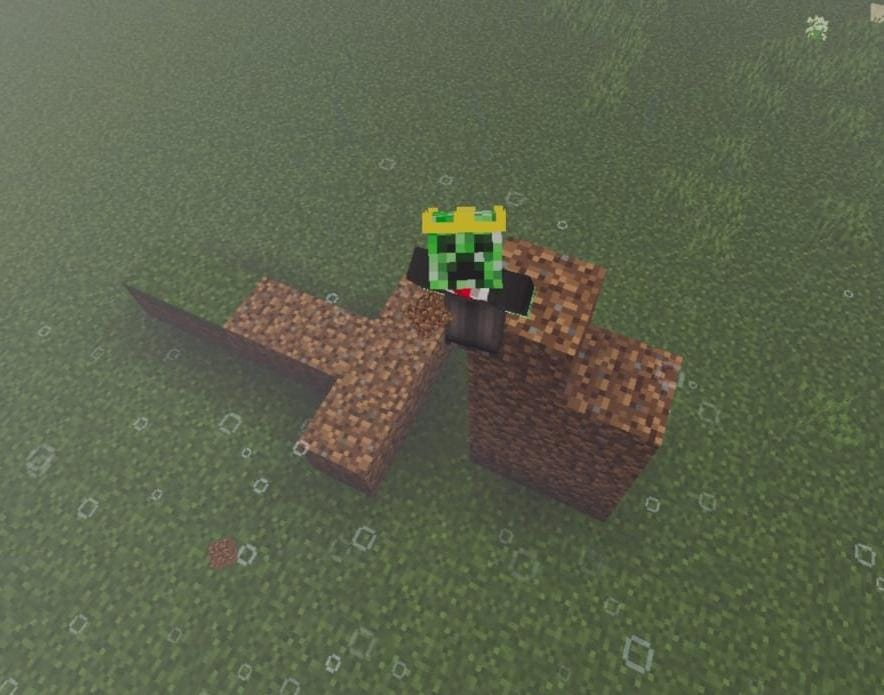
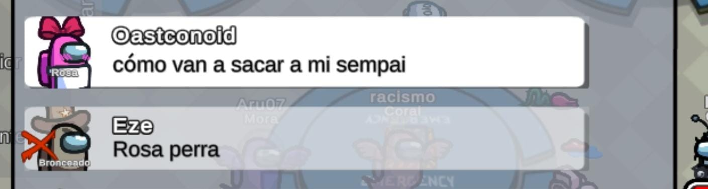
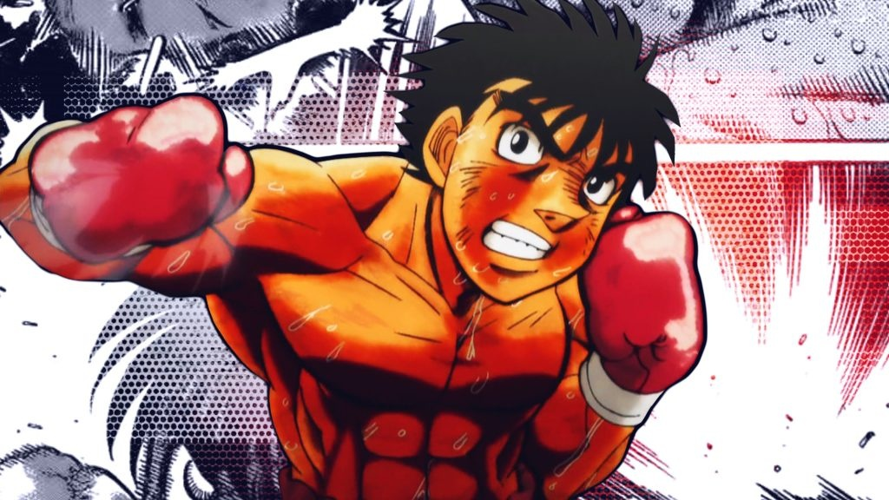
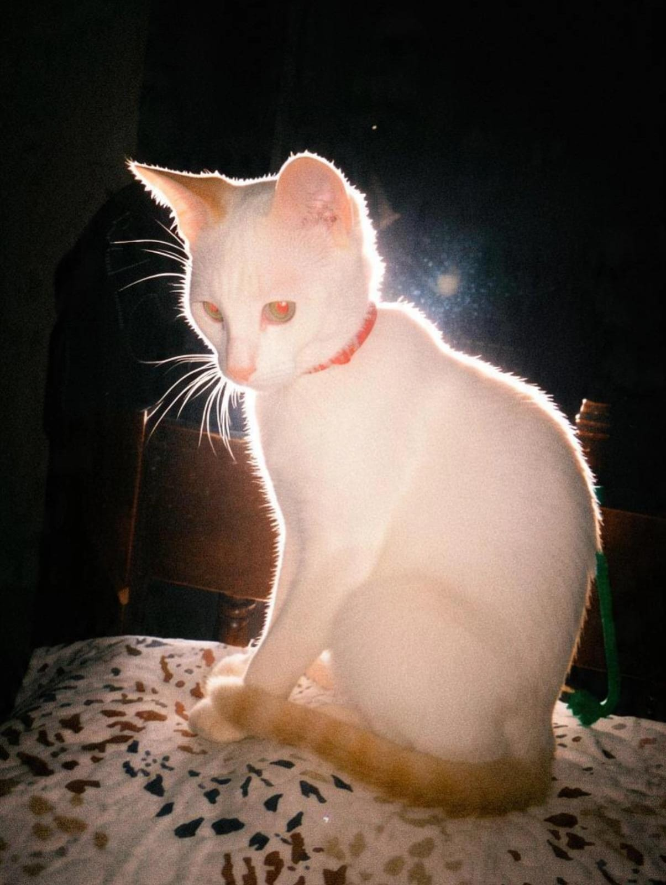
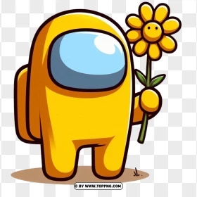

Minecraft, Among Us, Roblox, noches proyectando con Milo J de fondo... y lanzando comentarios épicos siempre. Esto es para ustedes.
Aquí la jefa del asunto soy yo con mi skin de creeper con corona, montando bases épicas y dejando marcas inmortales en el suelo de tierra para mis compañeros de equipo. Entre cubos, shaders y risas, el server es nuestro territorio.
"El pene dibujado en el piso de tierra en Minecraft no fue un error, fue alta ingeniería para el squad."

Los hermanos que siempre llevan el JP al final. Amantes del boxeo (estilo Hajime no Ippo) y de romper las partidas.
El que siempre arma las salas en Among Us. Es extremadamente bueno cazando e identificando a los impostores... pero si se le llega a dar poder, acaba con absolutamente todo el mundo. Se ganó el título de "senpai" cuando lo botaron de mala manera en una partida, dejándonos esta joya de chat:

El Among Us azul que actualmente anda por Brasil. De físico es más bien cortico pero destaca por ser súper atento y detallista. Además, comparte la afición por el boxeo junto a su hermano Jhonatan.


Copito es parte oficial del servidor ya que Edison siempre se la pasa diciendo "Copito te amo" por Discord. Con él vigilando de fondo, nuestras llamadas con música de Milo J son el escenario perfecto para partidas épicas y comentarios absurdos que solo a nosotros nos dan risa.

Inmunes a las malas partidas y listos para el siguiente apocalipsis.